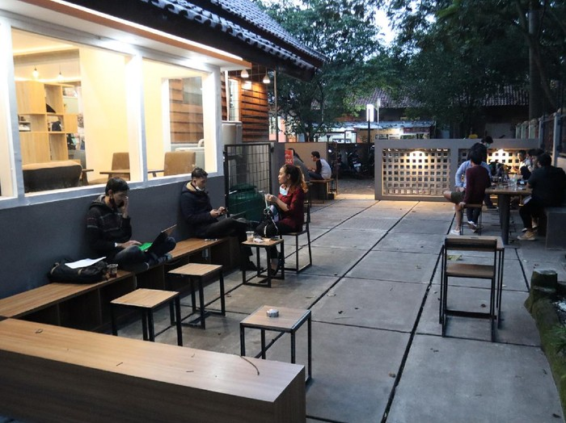
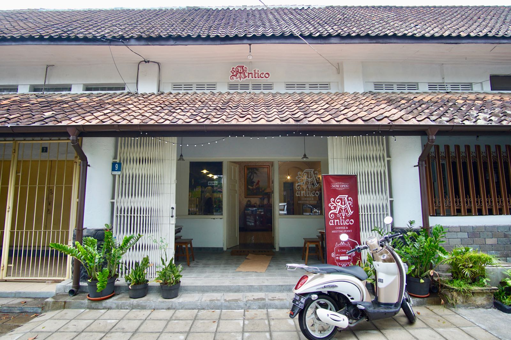

Selayang Pandang
Halo, perkenalkan nama saya Harry, di sini saya ingin berbagi mengenai 3 tempat kopi favorit saya. Mengapa demikian? Karena sudah menjadi rutinitas saya untuk menjadikan kopi sebagai teman berkegiatan sehari-hari, baik di kantor maupun saat bersama kerabat atau keluarga. Untuk itu, saya ingin berbagi mengenai 3 kedai kopi favorit saya. Langsung saja, yuk?! :)
Dejima Kohii

Coffee shop yang pertama berada di KPH Perhutani, Jl. Cirebon No.4, Kota Bandung. Meskipun lokasinya dekat dengan hiruk pikuk perkotaan dan juga lalu lintas yang padat, suasana rimbun pepohonannya menghilangkan suasana ramai perkotaan tersebut sehingga melengkapi kenikmatan kopi susu yang disajikan di sini. Selain itu, harganya yang terjangkau membuat tempat ini wajib dikunjungi bila sedang ingin ngopi untuk bersantai bersama keluarga atau untuk meeting bersama rekan kerja. Yang menarik adalah, jika pada umumnya datang ke kedai kopi hanya untuk kongko atau ngopi. Lain dengan kedai kopi yang ada di Kota Bandung ini, pengunjung bisa belajar soal membuat kopi hingga penyajiannya karena pengunjung bisa melihat dan bertanya mengenai proses pembuatan kopi. Oh ya, pada mulanya, ruangan yang digunakan untuk menjadi kedai tersebut merupakan gudang kosong. Demi pemanfaatan ruang, dijadikanlah tempat tersebut sebagai kedai kopi.
Kopi Toko Djawa

Kopi Toko Djawa sudah memiliki beberapa kedai seperti di Jl. Braga, Jl. Riau, Jl. Gandapura dan lainnya. Apa sih yang menjadi daya tarik utamanya? Tentu dari Es Kopinya yang khas dan juga suasana setiap kedainya. Untuk poin pertama, tak hanya bisa dinikmati di kedainya saja namun, dimanapun berada, es kopinya bisa mencairkan suasana seperti saat kerja, berkumpul bersama keluarga dan lainnya. Kedai kopi ini tampak begitu asyik karena berada di gedung kolonial yang sudah penuh pesona dari sananya. Tak perlu merenovasi gila-gilaan karena gedungnya sendiri sudah cantik sedari sana.
Antico

Lokasi kedai yang satu ini cukup tersembunyi. Ia berada di belakang lapang voli di Jl. Cihapit dan memiliki muka kedai yang cukup kecil. Meski demikian, nuansa Belanda sungguh kental terasa. Antico sendiri merupakan sebuah tribute terhadap arsitektur kolonial dan desain pada masa Belanda. Bangunannya sangat cantik dengan keramik kuno serta meja kursi dan lemari antik. Ditambah es kopinya yang nikmat, sangat cocok untuk bersantai selepas penat atau bahkan pada saat meeting karena ada beberapa ruang meeting yang bisa digunakan.